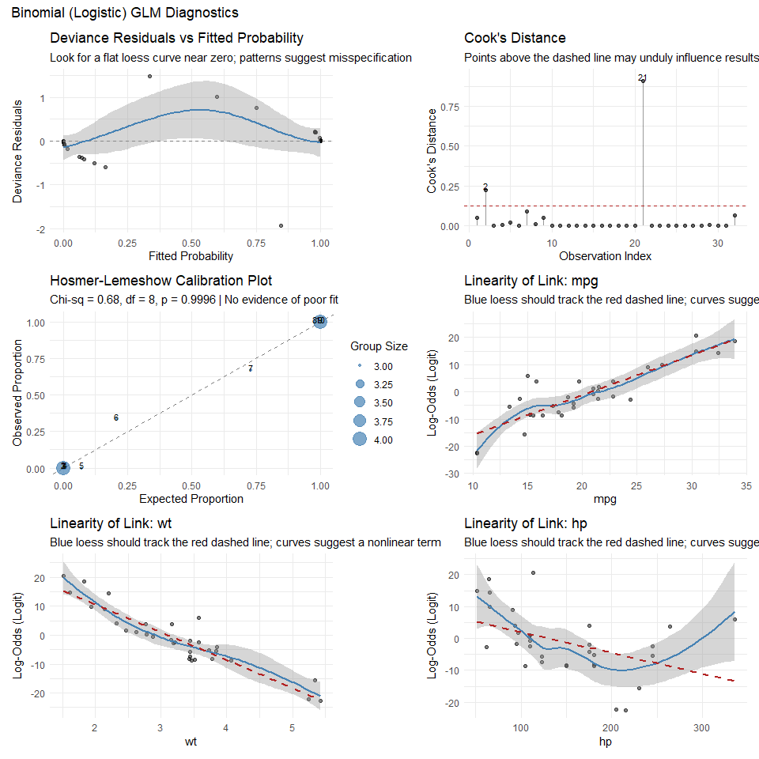
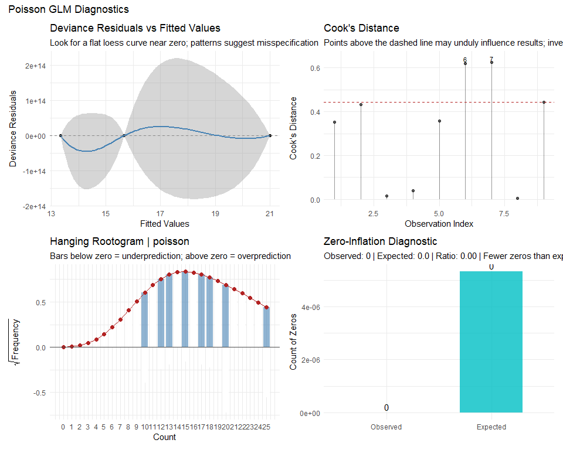
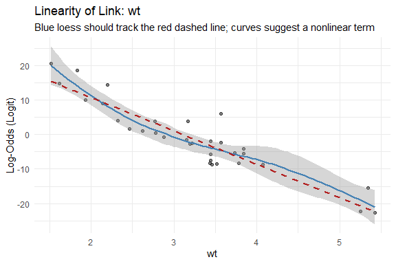
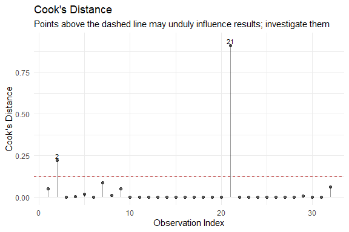
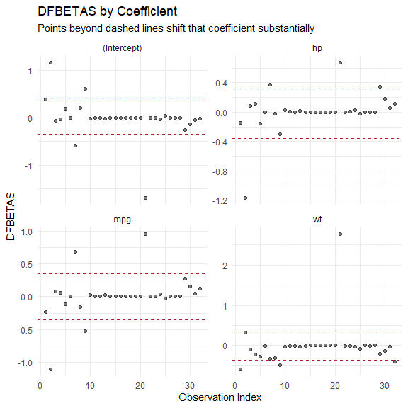
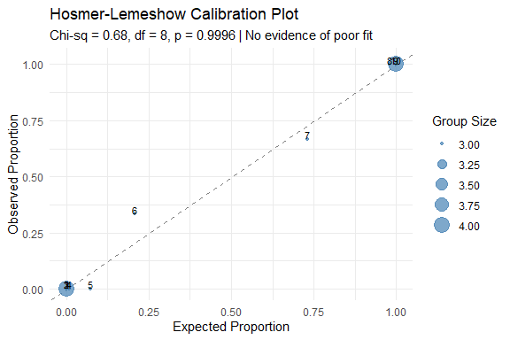
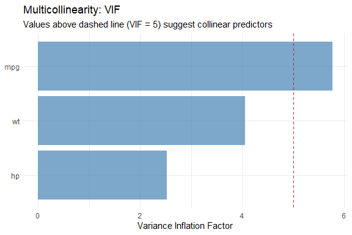
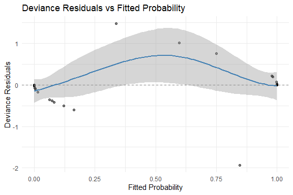

glmassume is a teaching-focused toolkit for checking the assumptions of generalized linear models fitted with glm(). Designed for students, instructors, and analysts learning GLMs, every plot includes an interpretive subtitle explaining what to look for, and every statistical test suggests what to do next. Supports binomial, Poisson, negative binomial, Gamma, inverse Gaussian, and Gaussian families with diagnostic plots built on ggplot2.
Need publication-ready output? Turn off the guidance globally with options(glmassume.guide = FALSE) or per-call with guide = FALSE.
What each diagnostic checks
| Diagnostic | Function | Families |
|---|---|---|
| Linearity of link | plot_linearity_link() |
All |
| Residual patterns | plot_residuals() |
All |
| Influential observations | plot_influence() |
All |
| Multicollinearity | plot_vif() |
All |
| Goodness of fit |
hoslem_test() / plot_hoslem()
|
Binomial |
| Overdispersion | overdispersion_test() |
All (most useful for Poisson/NB) |
| Dispersion | dispersion_test() |
All |
| Rootogram | plot_rootogram() |
Poisson / NB |
| Zero inflation | plot_zero_inflation() |
Poisson / NB |
| All-in-one panel | diagnose_glm() |
All (auto-detects family) |
Quick Start
Fit a model and run all diagnostics in one call. diagnose_glm() automatically selects family-appropriate diagnostics.
Binomial (Logistic Regression)
library(glmassume)
model_binom <- glm(am ~ mpg + wt + hp, data = mtcars, family = binomial)
diagnose_glm(model_binom)
Poisson (Count Data)
counts <- c(18, 17, 15, 20, 10, 20, 25, 13, 12)
outcome <- gl(3, 1, 9)
treatment <- gl(3, 3)
model_pois <- glm(counts ~ outcome + treatment, family = poisson)
diagnose_glm(model_pois)
Individual Diagnostics
Linearity of the Link
Each continuous predictor should have a linear relationship with the linear predictor (log-odds for binomial, log for Poisson, etc.). The blue loess curve should track the red dashed linear fit.
plots <- plot_linearity_link(model_binom)
plots[["wt"]]
Residual Diagnostics
The loess smoother should be roughly flat and centered near zero.
plot_residuals(model_binom, type = "deviance", vs = "fitted")
Influential Observations
Points above the dashed threshold () warrant investigation.
plot_influence(model_binom, type = "cooks")
DFBETAS show how each observation affects individual coefficient estimates.
plot_influence(model_binom, type = "dfbetas")
Hosmer-Lemeshow Test (Binomial)
The goodness-of-fit test from Hosmer, Lemeshow, & Sturdivant (2013). A non-significant p-value suggests adequate fit.
hoslem_test(model_binom)
#> Hosmer-Lemeshow Goodness-of-Fit Test
#> ------------------------------------
#> Groups: 10
#> Chi-sq: 0.6781 df: 8 p-value: 0.9996
#> => No evidence of poor fit; model appears adequately calibrated
#>
#> group n observed_1 expected_1 observed_0 expected_0
#> 1 4 0 0.0001560190 4 3.999844e+00
#> 2 3 0 0.0005911782 3 2.999409e+00
#> 3 3 0 0.0041047307 3 2.995895e+00
#> 4 3 0 0.0240418883 3 2.975958e+00
#> 5 3 0 0.2168488934 3 2.783151e+00
#> 6 3 1 0.6230661874 2 2.376934e+00
#> 7 3 2 2.1937543827 1 8.062456e-01
#> 8 3 3 2.9401004512 0 5.989955e-02
#> 9 3 3 2.9973372490 0 2.662751e-03
#> 10 4 4 3.9999990202 0 9.798401e-07
plot_hoslem(model_binom)
Overdispersion Test (Count Models)
overdispersion_test(model_pois)
#> Overdispersion Test (Pearson Chi-Squared)
#> ------------------------------------------
#> Family: poisson
#> Dispersion estimate: 1.2933
#> Pearson Chi-sq: 5.1732 df: 4 p-value: 0.2700
#> => Evidence of overdispersion (dispersion > 1)
#> Consider: quasipoisson, negative binomial, or robust standard errorsMulticollinearity
VIF values above 5 suggest moderate multicollinearity; above 10 is severe.
plot_vif(model_binom)
Turning Off Guidance for Publication
Every plot and test in glmassume includes interpretive subtitles and guidance by default (guide = TRUE). Set guide = FALSE for publication-ready output.
plot_residuals(model_binom, guide = FALSE)
The same toggle works for printed test output:
print(overdispersion_test(model_pois), guide = FALSE)
#> Overdispersion Test (Pearson Chi-Squared)
#> ------------------------------------------
#> Family: poisson
#> Dispersion estimate: 1.2933
#> Pearson Chi-sq: 5.1732 df: 4 p-value: 0.2700
#> => Evidence of overdispersion (dispersion > 1)To turn off guidance globally for an entire session:
options(glmassume.guide = FALSE)Related Packages
glmassume is a first-stop teaching companion that pairs well with these excellent tools:
- DHARMa – simulation-based residuals, essential for mixed models and non-standard GLM extensions.
- performance (easystats) – comprehensive model checking across many model types, with a broad suite of indices and tests.
- car – the textbook classic for regression diagnostics and hypothesis testing.
Each package has different strengths; use them together for the most thorough analysis.
References
- Hosmer, D.W., Lemeshow, S., and Sturdivant, R.X. (2013). Applied Logistic Regression, 3rd Edition. John Wiley & Sons.
- Kleiber, C. and Zeileis, A. (2016). Visualizing Count Data Regressions Using Rootograms. The American Statistician, 70(3), 296–303.
Getting help
- Browse the walkthrough vignette for a guided tutorial
- File bugs or feature requests at https://github.com/dusty-turner/glmassume/issues